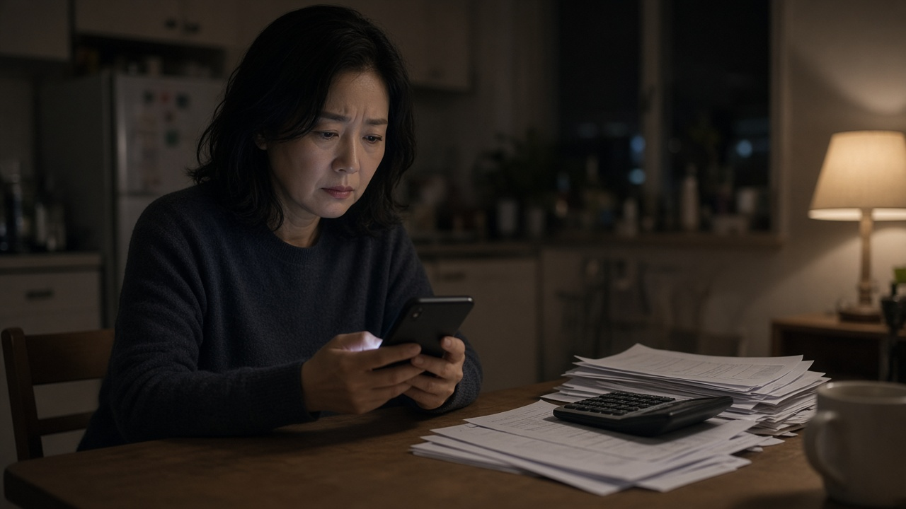

불법사채 피해 원스톱 지원 11월 16일부터 온라인 신청, 센터 안 가도 전담자 배정받는 방법

급하게 빌린 돈이 감당할 수 없는 이자로 불어나고, 밤낮없이 걸려 오는 추심 전화에 시달리고 계신다면 혼자 버티지 않으셔도 돼요.
정부가 운영하는 불법사금융 원스톱 지원을 11월 16일부터는 서민금융통합지원센터에 가지 않고 온라인으로도 신청할 수 있게 됐어요.
그동안은 전국 22곳 센터를 직접 찾아가야만 전담자를 배정받을 수 있어서, 생업 때문에 평일 낮에 시간을 못 내거나 추심이 무서워 밖에 나가기 어려운 분들은 이용이 쉽지 않았어요.
무엇이 달라졌는지, 어디서 어떻게 신청하는지, 연 60퍼센트를 넘는 사채는 왜 갚지 않아도 되는지 차례로 정리해 볼게요.
무엇이 달라졌나, 11월 16일부터 온라인 24시간 신청
금융위원회는 11월 16일부터 신용회복위원회 홈페이지와 모바일 앱에서 불법사금융 원스톱 지원을 신청할 수 있다고 밝혔어요.
온라인 신청은 24시간 열려 있어서 밤이나 주말에도 원할 때 접수할 수 있어요.
온라인으로 신청해도 센터에 직접 가서 신청한 것과 똑같이 피해자마다 전담자가 배정돼요.
이 서비스는 상담부터 지원까지 모든 절차가 무료예요.
금융위원회 집계로는 시행 뒤 약 8개월 동안 1,239명이 피해 상담을 받았고, 불법사채업자와 채무종결 합의가 776건 이뤄졌어요.
신청하는 방법, 본인인증 뒤 업자 정보와 피해금액만
신용회복위원회 디지털상담 홈페이지 cyber.ccrs.or.kr 이나 모바일 앱에 들어가 로그인한 뒤 불법사금융 피해 원스톱 신고 메뉴를 고르면 돼요.
회원가입이 안 되어 있으면 가입 화면으로 먼저 넘어가요.
개인정보 수집과 제3자 제공에 동의하고 기본정보를 입력한 다음, 피해를 준 업자 정보와 피해금액을 적고 피해신고서에 전자서명하면 신청이 끝나요.
업자가 둘 이상이면 추가 버튼으로 여러 곳을 함께 적을 수 있어요.
어떻게 신고해야 할지 막막하다면 신용회복위원회 콜센터 1375에 먼저 전화해 내 상황에 맞는 방법을 안내받으셔도 돼요.
신청하면 전담자가 해 주는 일
접수가 되면 전담자가 전화나 문자로 연락해 피해신고서 작성을 도와줘요.
전담자는 불법사채업자에게 위법하다는 사실을 알리고 불법추심을 멈추라고 경고하면서 채무를 끝내라고 요구해요.
채무자대리인을 무료로 선임해 주고 법률상담도 연결해 주는데, 대리인이 선임되면 이후 추심 연락은 대리인이 상대하게 돼요.
추심에 쓰인 전화번호와 SNS 계정은 이용을 막고, 범죄에 쓰인 계좌는 지급정지를 요청해요.
경찰 수사도 의뢰하고, 업자가 잡히면 부당이득 반환 같은 피해회복 소송으로 이어 주며, 필요하면 신용회복위원회 채무조정과 금융, 고용, 복지 지원까지 함께 연결해 줘요.
연 60퍼센트 넘는 사채는 원금과 이자 모두 무효
2025년 7월 22일부터는 연 이자율이 60퍼센트를 넘는 불법사채처럼 사회 질서에 어긋나는 대부계약은 원금과 이자 모두 무효가 됐어요.
이런 계약을 맺은 피해자는 금융감독원장 이름으로 나오는 반사회적 대부계약 무효확인서를 받아 활용할 수 있어요.
무효확인서는 신용회복위원회 원스톱 지원을 거치거나 금융감독원 홈페이지의 불법 사금융 원스톱 피해신고로 신청하면 돼요.
이 무효 규정은 2025년 7월 22일 이후에 맺은 계약에 해당한다는 점은 꼭 기억해 두세요.
정리하면 이렇게 하세요
불법사채나 불법추심에 시달리고 있다면 업자 연락처, 계좌, 빌린 금액과 갚은 기록 같은 자료부터 모아 두세요.
그다음 신용회복위원회 홈페이지나 앱에서 원스톱 신고를 하거나, 콜센터 1375에 전화해 상담을 받아 보세요.
직접 상담이 편하다면 지금처럼 전국 22곳 서민금융통합지원센터에 전화로 상담한 뒤 방문해도 돼요.
공식 원스톱 지원은 상담부터 지원까지 모두 무료이니, 도와주겠다며 수수료를 먼저 내라는 연락은 의심하고 응하지 마세요.
참고 자료 금융위원회 보도자료 불법사금융 원스톱 지원 이제 센터 방문 없이도 신청 가능합니다 2026년 11월 13일 배포 11월 16일 보도, 연합뉴스 2026년 11월 15일 보도, 머니투데이 2026년 11월 15일 보도
태그 불법사금융 불법사채 불법추심 원스톱지원 신용회복위원회 반사회적대부계약 무효확인서 채무자대리인 서민금융통합지원센터 금융위원회